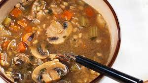

Mushroom Barley Soup

Size: 10,2 kilobytes (10,172 bytes).
Mushroom Barley Soup is perfect for cold winter night.
The Preparation takes 15mins, cooking 50mins. total 65mins
Nutrient Facts: Per serving 198 calories; protein 5,8; carbohydrates 24g; fat 9,9g; sodium 27,7mg
1. Ingredients
- 1/4 cup of olive oil.
- 1 cup of chopped onion
- 3/4 diced carrots
- 1/2 cup of chopped celery
- 1 teaspoon minced garlic
- 1 pound sliced fresh mushrooms
- 6 cups chicken broth
- 3/4 cup barley
- Salt and pepper to taste
2. Steps
- Heat the oil in a large soup pot over medium heat.
- Add the onion, carrots, celery and garlic, cook and stir until onions are tender and transparent.
- Stir in mushrooms and continue to cook for a few minutes .
- Pour in the chicken broth and add barley.
- Bring to a boil then reduce to low .
- Cover and simmer until barley is tender about 50minutes.
- Season with salt and pepper before serving.